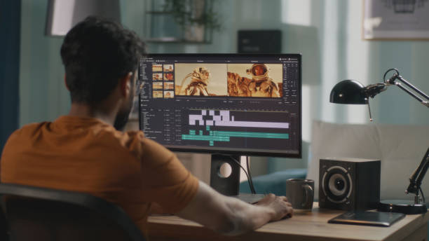
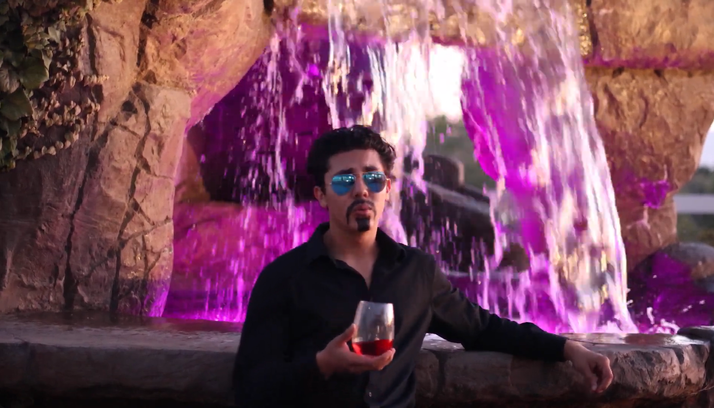
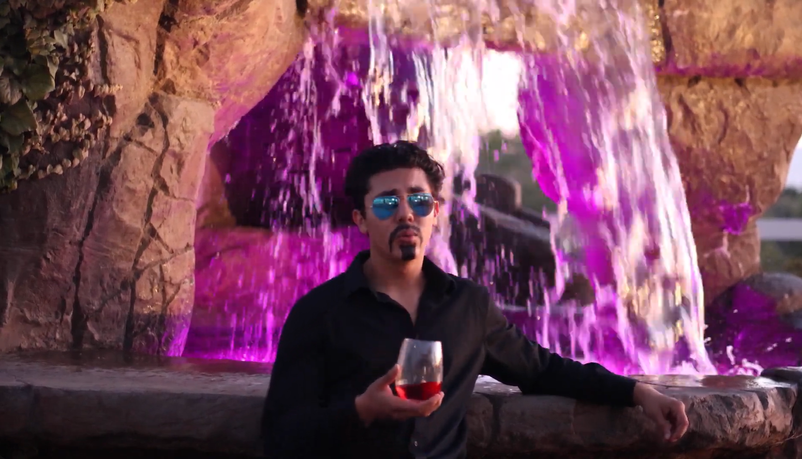
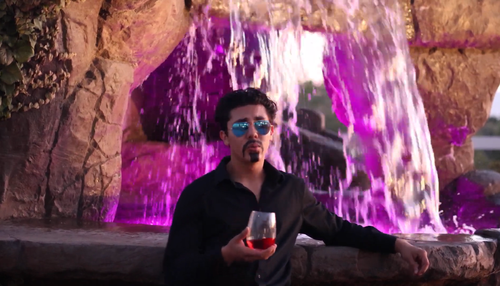

Micah Nicklason
Micah Nicklason is a passionate video editor and filmmaker dedicated to bringing stories to life through the art of visual storytelling. With a keen eye for detail and a flair for creativity, he has carved out a niche in the world of video production, specializing in short advertisements and narrative films. Micah believes that every project is an opportunity to connect with audiences, evoke emotions, and inspire action.
Currently, Micah collaborates with a local coffee shop, where he plays a pivotal role in producing engaging short advertisements. These projects have not only enhanced the shop’s online presence but also allowed him to experiment with different styles and techniques that resonate with viewers. Each advertisement is crafted with a deep understanding of the brand’s ethos, ensuring that the essence of the coffee shop is captured in every frame. His work has received positive feedback, highlighting his ability to blend compelling visuals with a narrative that draws customers in.
In addition to commercial work, Micah is deeply invested in the world of independent filmmaking. He collaborates regularly with friends on short films, leveraging their collective talents to explore diverse themes and genres. This creative partnership not only fuels his passion for storytelling but also allows for experimentation with innovative editing techniques and cinematography. The collaborative nature of these projects has honed his skills in both editing and direction, enriching his understanding of the filmmaking process from concept to final cut.
Beyond technical expertise, Micah is committed to continuous growth as a filmmaker. He regularly seeks out opportunities to learn from industry professionals, attend workshops, and engage with the filmmaking community. This dedication to personal and professional development ensures that he stays abreast of the latest trends and technologies in video editing, allowing him to bring fresh ideas and innovative approaches to each project.
Micah is also passionate about storytelling as a means to foster connection and understanding. Whether through the lens of an advertisement or the narrative arc of a short film, he believes in the power of visuals to communicate messages that resonate on a personal level. This philosophy drives his work, making each project not just a job, but a chance to create something meaningful.
As he continues to expand his portfolio and tackle new challenges, Micah remains excited about the future of video editing and filmmaking. With each project, he aims to refine his craft, tell compelling stories, and inspire others through the magic of film.
In his spare time, Micah enjoys exploring the local coffee scene, finding inspiration in the vibrant culture surrounding his favorite brews. This connection to the community fuels his creativity and keeps him grounded as he navigates the ever-evolving landscape of video production.
Experience
Barista
• Experience with espresso machines
• Worked as a team
• Learned customer service
Videographer / Editor
• Experience with cameras, photoshop, editing software
• Filmed videos and designed menus for Six Beans Coffee Co.
Education
UC Riverside
Portfolio

 

